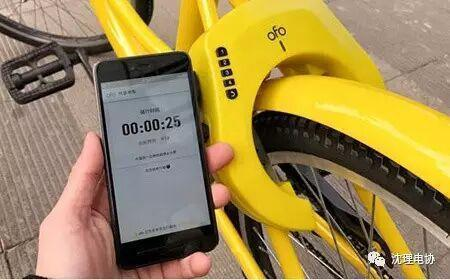
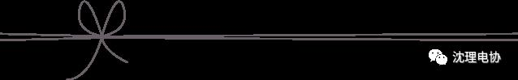
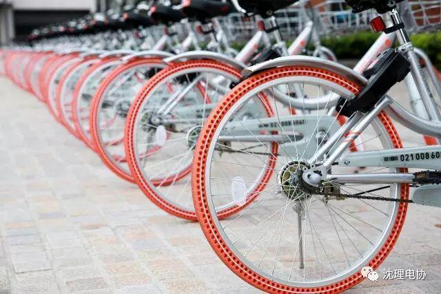
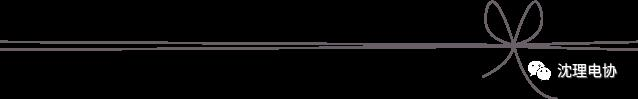

共享单车，便利生活！
摩拜等五家公司承诺
共享单车押金、余额均可退

共享单车公司发展迅猛，但在押金管理、车辆安全及消费者人身安全保障、支付安全信息保护、车辆投放等方面存在不少问题。中国消费者协会日前组织ofo、摩拜、小蓝、由你、永安行5家共享单车公司与专家对话，共同探讨保障消费者合法权益、确保用车安全的途径、方法。5家公司均表示，用户押金将统一存放在银行，进行第三方资金监管。押金和充值余额均可退。


ofo单车有关负责人表示，目前ofo单车的99元押金均可以通过APP退款；同时，账户内的充值余额也可退款，申请充值余额退款后，最长不超过72小时可退款成功。摩拜单车有关负责人称，摩拜单车299元押金可通过APP直接退还；对于不是原路退还的用户，会通过个人信息验证等方式退还押金。对目前这些单车公司APP界面均没有“余额退款”选项的问题，5家企业表示可以通过客服电话、APP反馈问题等方式退还充值余额。中消协律师团律师胡钢建议，各共享单车企业应向社会和消费者公示资金监管协议内容，保障消费者资金安全。


用户通过共享单车APP进行用户注册时，一般都需要填写手机号码、用户名等个人信息。摩拜单车有关负责人表示，在用户信息安全方面，已经跟海淀网警合作，进行合法合规监管。小蓝单车有关负责人表示，已与阿里巴巴公司合作，所有用户信息都存储在相应的监管系统。

安全
近日，骑共享单车摔倒受伤、遇到交通事故等问题引发关注。ofo单车有关负责人表示，已为每个用户投保人身意外险，用户在骑车过程中遇到意外事故可申请赔偿。小蓝单车有关负责人表示，小蓝单车进入北京1个月以来，已完善用户保险，每个用户都有保险和保障。对此，中消协律师团律师邱宝昌认为，为用户提供人身意外险是基本保险，除此之外，还应考虑到意外交通事故的保险赔偿问题。

.对于共享单车车锁坏、车座掉、轮胎破损等问题，ofo单车有关负责人表示，“小黄车”的坏损率约占投放总量的1%。公司已对单车进行网格制管理，及时处理车辆故障。对于车锁常坏的问题，已经跟华为签订合作协议，改进车锁。
.对于共享单车车锁坏、车座掉、轮胎破损等问题，ofo单车有关负责人表示，“小黄车”的坏损率约占投放总量的1%。公司已对单车进行网格制管理，及时处理车辆故障。对于车锁常坏的问题，已经跟华为签订合作协议，改进车锁。
文字来源于新华网
排版：赵玉泉


公众号
sylgdzxh